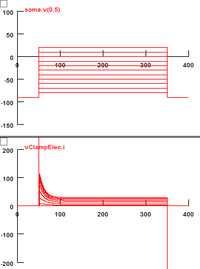
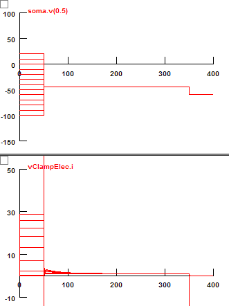
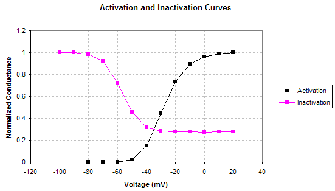
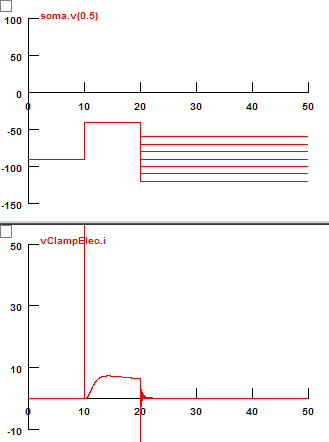
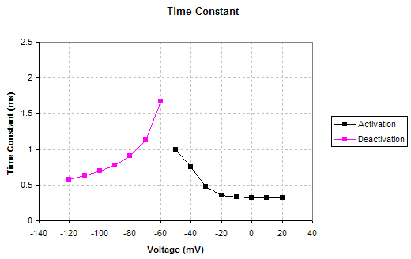

The goal of this short project is to create a KD model, which can reproduce the data presented in Mathews et al's article (http://www.nature.com/neuro/journal/v13/n5/full/nn.2530.html). The liquid potential is not corrected. The activation GV curve is shifted to depolarization direction to simulate the condition in whole cell recording.
mV1/2 = -28
mK = 7.4
hV1/2 = -57.1
hK = 6.2
g = gbar * m4 * h
Mod file: kd_pyc.mod
| Voltage and Current Traces | |
|---|---|
| Activation | Inactivation |
|  |  |

| Deactivation | Time Constant |
|---|---|
|  |  |